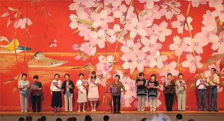
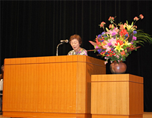
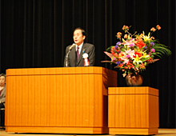
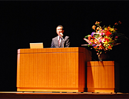
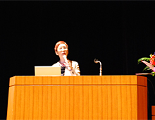
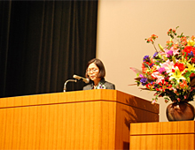

10月10日(木)、埼玉会館にて、全体会に900人が参加し、｢つながろう ふみだそう 平和で公正な社会に向けて｣をスローガンに、第49回埼玉県消費者大会が開催されました。
■オープニング
♪みんなで歌う「花は咲く」（NHK東北大震災復興支援ソング）
指揮を埼玉合唱団の渡辺陽子さんがつとめ、実行委員会有志メンバーが、壇上で会場の皆さんをリードし、和やかなオープニングになりました。
|  |
■大会実行委員長挨拶
第49回埼玉県消費者大会実行委員会を代表して、加藤ユリ実行委員長が挨拶しました。
|  |
加藤実行委員長は、「第49回埼玉県消費者大会への多くのご参加、上田知事お忙しい中のご出席、ありがとうございます。27の実行委員団体が大会スローガンのもと、話し合いを重ね、この消費者大会を開くことができました。2回のプレ学習会では、TPPや日本の食の安全の、事の本質を知ることができました。いま、消費税が上がることや子どもたちの未来、医療費や介護保険などの負担増、福島の原発事故は汚染水流出問題など、様々な問題や不安が大きくなっています。TPP交渉の会合も私たちの願いと大きくかけ離れた方向に進もうとしている事態に唖然とします。基調報告の中には、平和なくして公正で安心した暮らしはできない、とあります。憲法を学び、平和の取り組みを強めることは非常に大切です。消費者行政活性化基金活用の県内消費者団体の交流会には、多くの消費者団体や行政の参加で成功させてきました。その中から消費者団体と市町村行政との懇談も行われています。一歩一歩ですが草の根から私たち市民の声を届けていくことが大切ではないでしょうか。皆さんの日々の活動に期待し、今日の消費者大会をみんなで学び交流し成功させていきたいと思います」と力強く述べました。
■来賓挨拶
|  |
来賓の上田清司埼玉県知事より「今大会が多くの皆様のご参加の中で行われることをありがたく嬉しく思います。皆様には、日頃消費者問題、食の安全など、各分野でご尽力をいただいていますこと、あらためて感謝申し上げます。埼玉県の詐欺事件のうち、3分の1は65歳以上の高齢者の被害です。この5年ほどで消費者相談窓口が各市町村で週4日以上開設できるようになりましたが、残念ながら、窓口を知らない方が多い。
ご参会の皆様に各分野のネットワークでこのことをお伝えいただければ、事件は更に減るのではないかと思います。24年度の県内の悪質事業者に対する処分件数は7都道府県の中で最も多い。新たな手口の事象に対し、我々はそれ以上の技術や知識を学ばなければならないと思います。分科会ではそれぞれの分野で新しい知識を学ばれて、それを消費生活の中で生かして頂きたいと、心からお願いするところです。今大会を機にさらにこの連絡会、またそれぞれの会の皆様が、より一層大きな成果をあげられますよう心からご祈念ご期待申しあげます」と挨拶いただきました。
■基調報告と埼玉県への要請書の提案
|  |
岩岡宏保事務局長が第49回埼玉県消費者大会の基調報告と埼玉県への要請書の提案に立ちました。岩岡事務局長は大会基調報告として、「消費者運動は、『私たちのいのちとくらしは、私たちの手で守ろう』という意思を束ねた取り組みの積み重ねであり、憲法にうたわれている「平和」「基本的人権」「生存権」などを大切にする「憲法を活かす」取り組みとも言えると思います。」と述べ、世界の枠組みの大きな変化や高齢化、貧困化、格差拡大などが進み不安が増す状況のなかで、公正で安心したくらしの実現に向けて、食の安全・安心は、引き続き、消費者の第一の願いであること、復興支援を継続し、多くの国民の願いである原発のない社会を実現すること、省エネも創エネも、目標を持って更なる推進をすすめていくこと、消費者被害の防止に向け一層の消費者行政充実を求めていくこと等、みんなで取り組んでいくことを提案し、「協働によって平和で公正な社会の実現を」と呼びかけました。あわせて31項目の県への要請が提案し拍手で確認されました。
■記念講演
|  |
上野 千鶴子さん(社会学者・東京大学名誉教授)が｢みんなおひとりさま｣～いまから考えよう！より良い人生を送るために～と題して講演されました。
■大会アピール採択
|  |
埼玉県消費生活コンサルタントの会の小島裕子さんより提案され、参加者の拍手で確認されました。